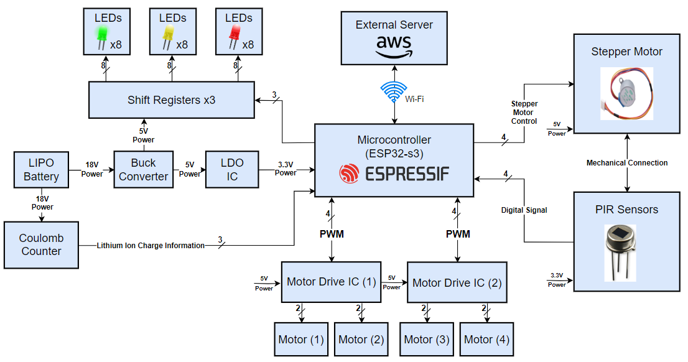

M.O.U.S.E.
Mobile Observation Unit for Surveillance Equipment
Project Description:
MOUSE is a mobile surveillance robot intended for indoor use, in corporate office or residential environments. MOUSE will be powered by four motors, each controlling its own wheel for mobility. There will be a large 18V battery allowing MOUSE to perform surveillance overnight without needing to have its battery replaced. When the battery does die, it will need to be recharged manually. MOUSE will have the ability for the motors to have variable speed control through the use of PWM signals. MOUSE will also have a custom circuit to step down the 18V from the battery to 5V for motors, sensors and ICs, as well as 5V to 3.3V for the microprocessor.
To complete its surveillance functionality, MOUSE will have PIR sensors on all four sides, allowing for the detection of movement. While stationary, MOUSE will use these sensors to detect any movement in its vicinity. Finally, there will be a viewable UI on a webpage to use MOUSE movement controls and display if any objects have been detected. MOUSE and the web interface will send data wirelessly through WiFi via a web server. The block diagram below represents the connections between the described functional components of MOUSE.
Additionally, we have the following stretch goals for the functionality of MOUSE. The PIR sensors may be mounted to a motor to ensure 360 degree coverage, instead of simply mounting four separate sensors to each side of MOUSE. MOUSE may be able to follow a predetermined path set by the user.

Project Specific Design Requirements (PSDRs):
- PSDR #1 (Hardware): An ability to control the speed of the motors with PWM signals from the microcontroller.
- PSDR #2 (Hardware): An ability to step down 18.5V from the battery to 5V for circuit components on the PCB and motors using a team designed DC switching regulator.
- PSDR #3 (Hardware): An ability to utilize LEDs with a daisy chained shift register circuit controlled by the microcontroller to display battery life diagnostic.
- PSDR #4 (Software): An ability to display data, such as movement controls and movement detection data to a viewable UI on a webpage.
- PSDR #5 (Software): An ability to control the robot by sending data wirelessly through WiFi via a web server.
- Stretch PSDR #1 An ability to record a set path and then play back the same actions: if the robot records a path for 30 seconds, then its playback should be within 1 meter of the original pathing at all times
- Stretch PSDR #2: An ability to detect movement by using a PIR sensor that is attached to an motor with an encoder. The microcontroller will control the motor direction using feedback from the encoder, and the microcontroller will read the output of the PIR sensor.